PHOTOS THAT WILL MAKE YOU WANT TO TRAVEL SRI LANKA..
PHOTOS THAT WILL MAKE YOU WANT TO TRAVEL SRI LANKA..
Here are 35 photos that will probably make you want to book a flight to Sri Lanka ASAP:
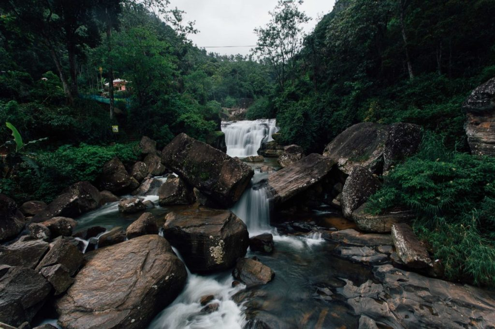
Waterfall discoveries on the drive from Nuwera Eliya to Kandy
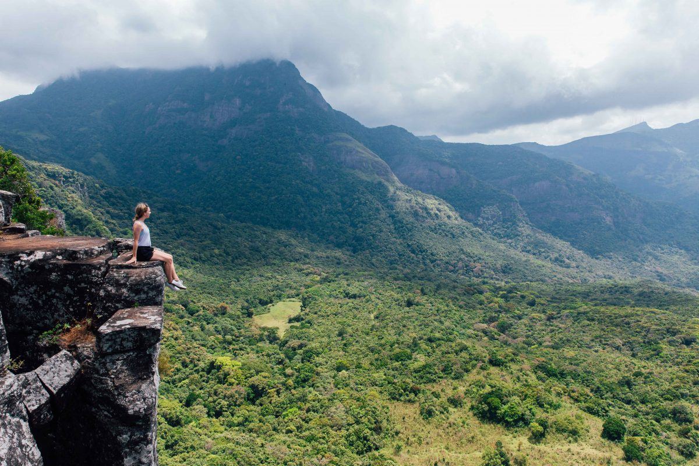
Exploring the Knuckles Mountain Range
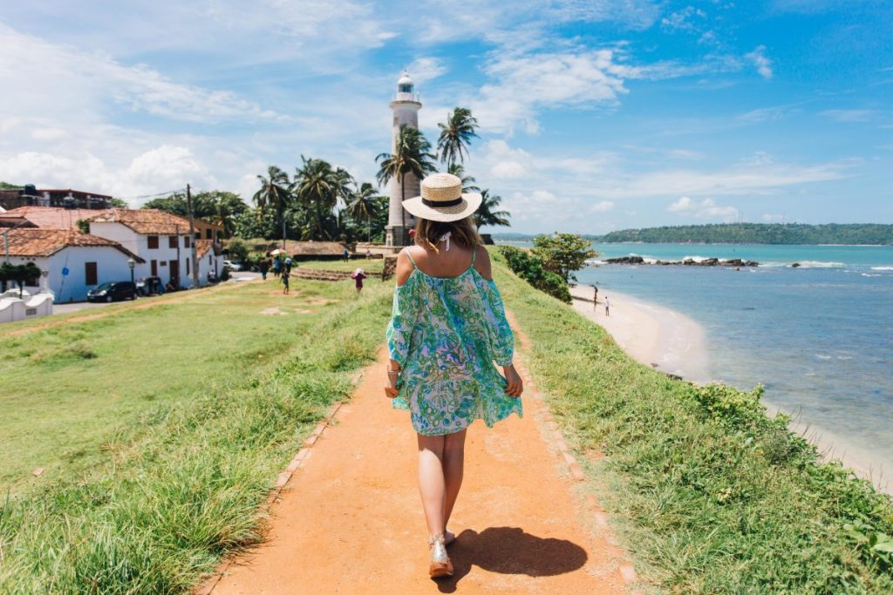
Exploring the town of Galle
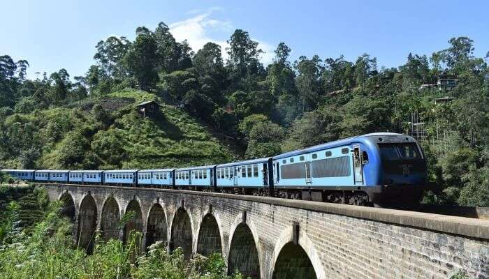
Witness The Countryside Charm
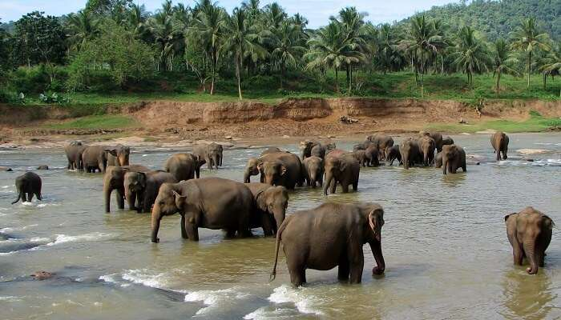
Pinnawala Elephant Orphanage – See The Giant Beasts
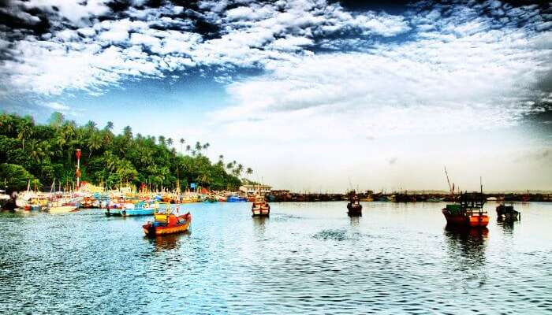
Mirissa – Go Whale Watching
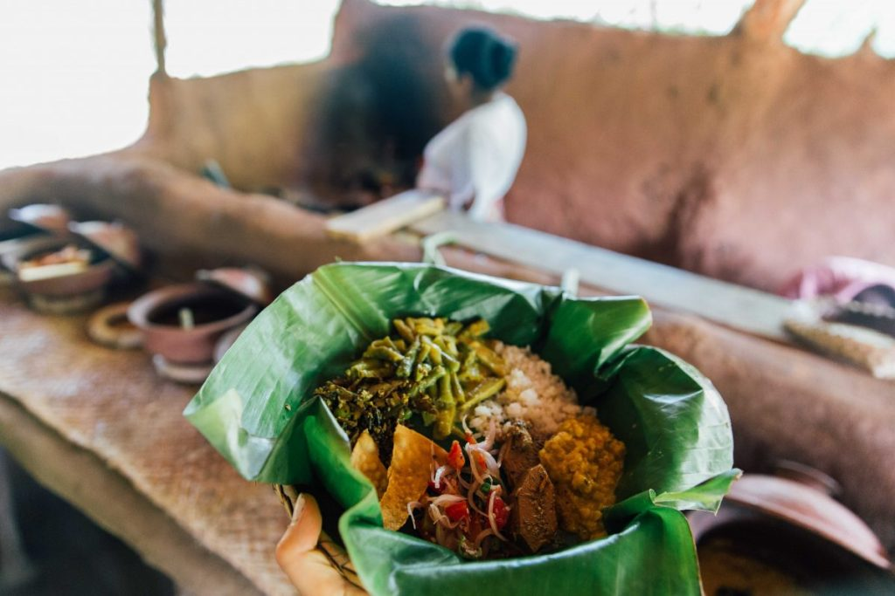
Feasting on delicious Sri Lankan Curry at a local village
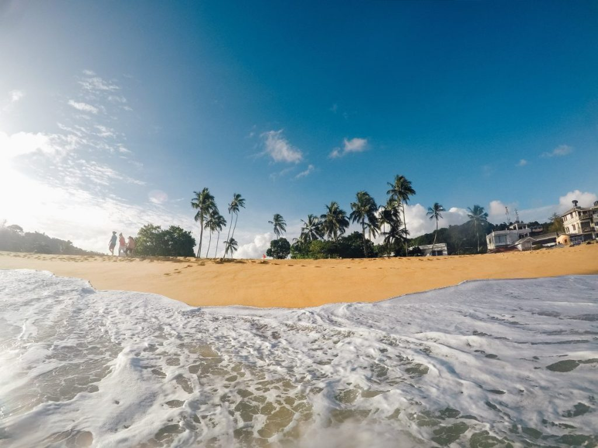
Afternoon swims at Unawatuna Beach

Yala National Park – Amidst The Wildlife

Climbing the famous Sigiriya Rock Fortress
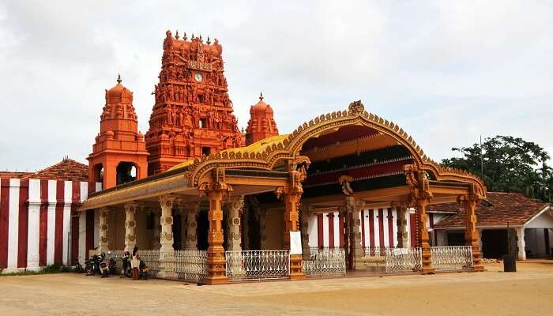
Jaffna – Explore The Historical Architectures
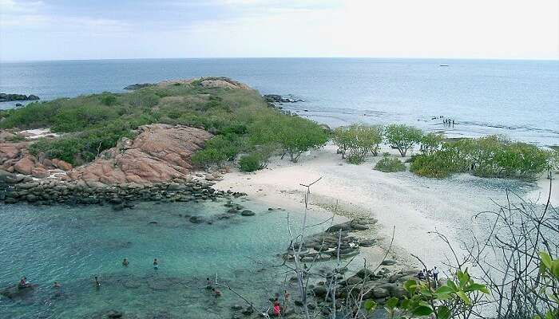
Trincomalee – The Temple City
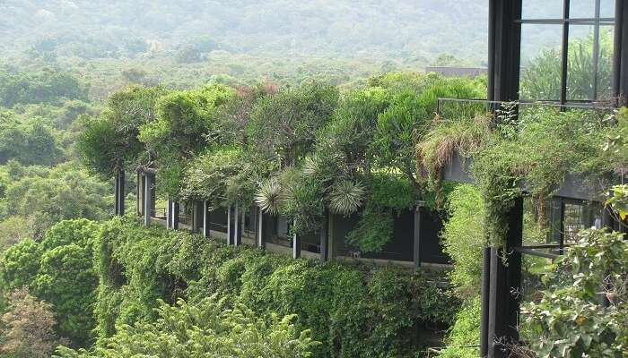
Kandalama – The Surreal Village
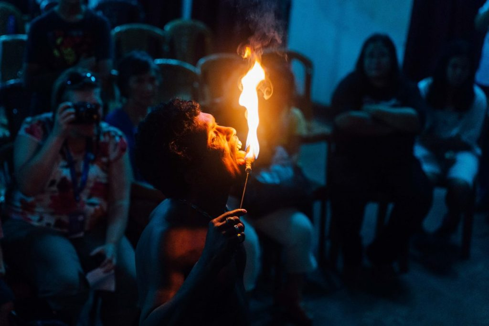
Watching the fire walkers during a cultural show in Kandy
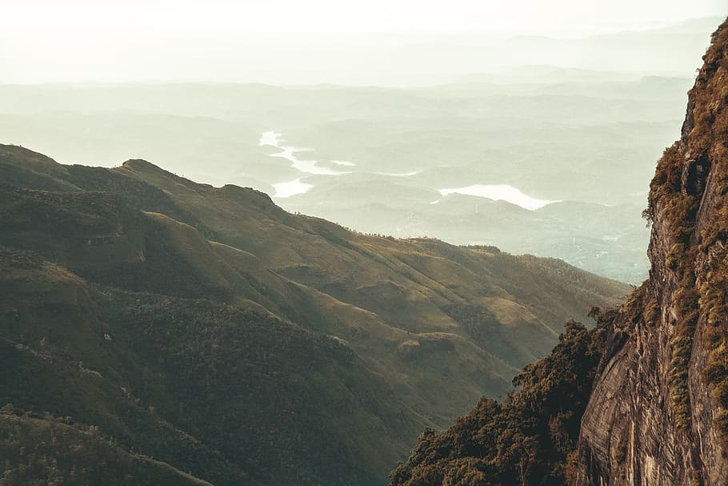
Horton Plains National Park – Of Lakes And Greenery
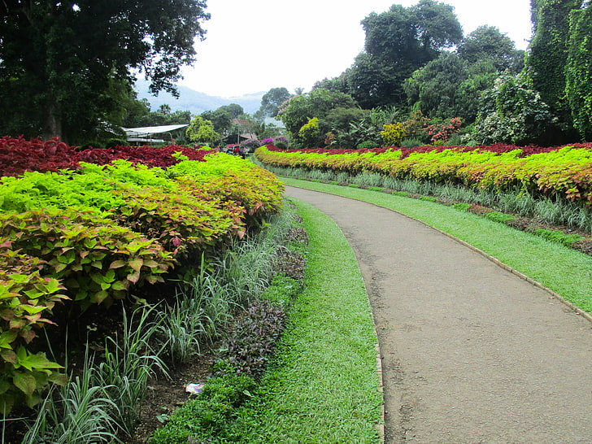
Perandeniya Botanical Gardens – See The Flowers Blooming
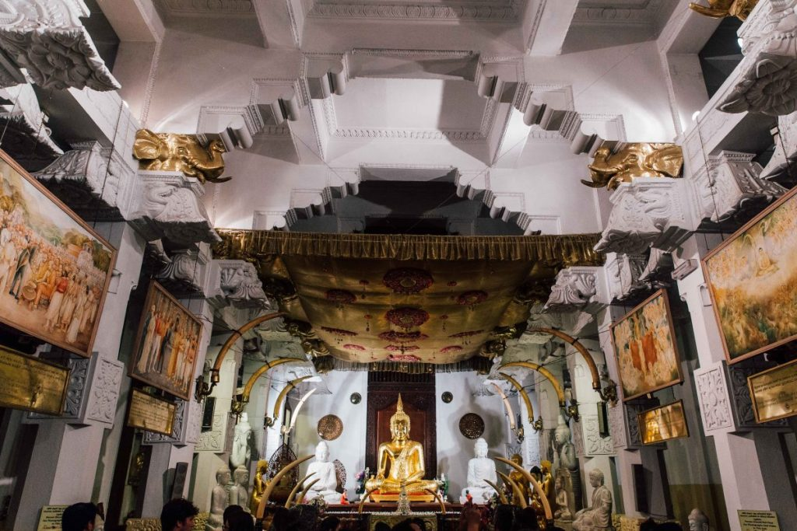
Exploring the famous Temple of the Tooth in Kandy
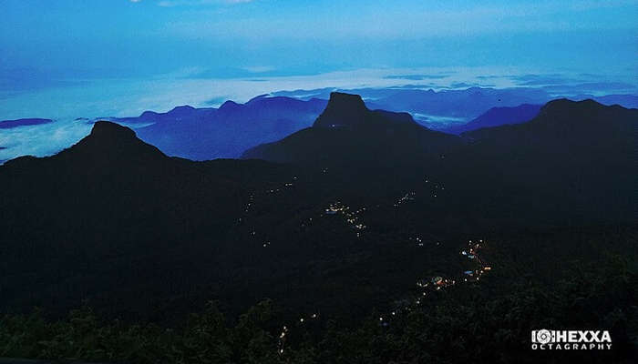
Adams Peak – The UNESCO World Heritage Site

Elephant Safari at Minneriya National Park
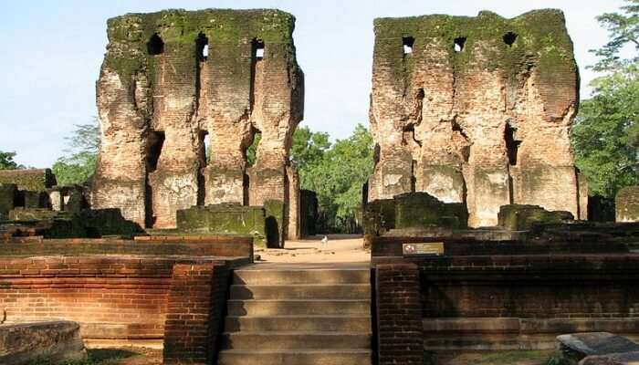
Polonnaruwa – The Ancient Ruins
Take a trip to these most beautiful places in Sri Lanka and you would find it difficult to leave back home. Read on to know the most beautiful experiences of Sri Lanka that includes astounding places and popular attractions.